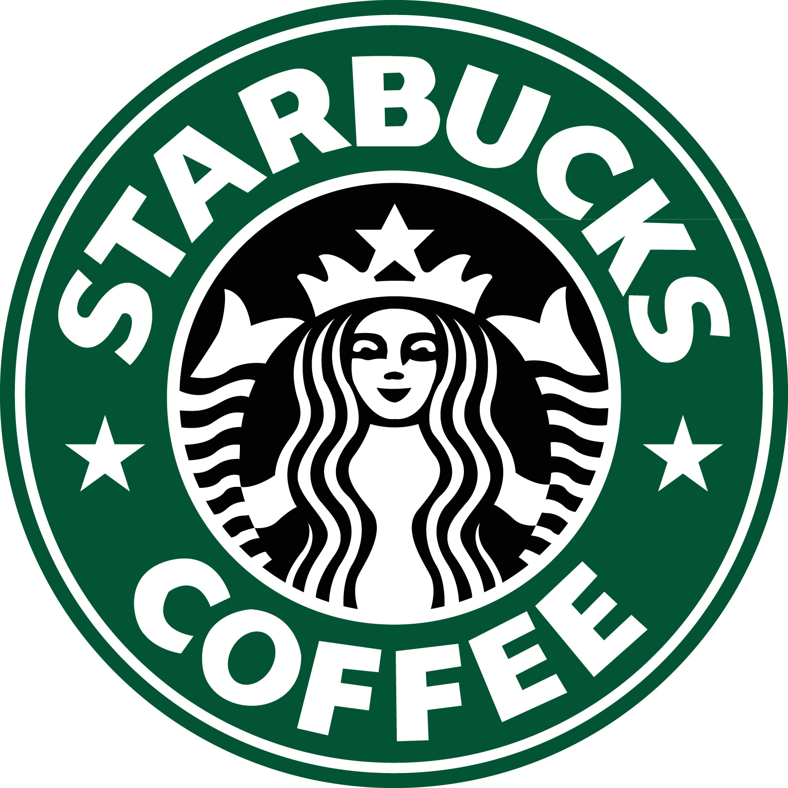

About Coffee
Coffee trees are pruned short to conserve their energy and aid in harvesting, but can grow to more than 30 feet (9 meters) high. Each tree is covered with green, waxy leaves growing opposite each other in pairs. Coffee cherries grow along the branches. Because it grows in a continuous cycle, it’s not unusual to see flowers, green fruit and ripe fruit simultaneously on a single tree. It takes nearly a year for a cherry to mature after first flowering, and about 5 years of growth to reach full fruit production. While coffee plants can live up to 100 years, they are generally the most productive between the ages of 7 and 20. Proper care can maintain and even increase their output over the years, depending on the variety. The average coffee tree produces 10 pounds of coffee cherry per year, or 2 pounds of green beans. All commercially grown coffee is from a region of the world called the Coffee Belt. The trees grow best in rich soil, with mild temperatures, frequent rain and shaded sun.
Dunkin
Dunkin' Donuts, currently rebranding its stores as Dunkin', is an American multinational coffee company and quick service restaurant. ... With nearly 12,000 locations in 36 countries, Dunkin' is one of the largest coffee and baked goods chains in the world.
Starbucks 
Starbucks Corporation is an American coffee company and coffeehouse chain. Starbucks was founded in Seattle, Washington in 1971. ... Starbucks-brand coffee, ice cream, and bottled cold coffee drinks are also sold at grocery stores.
Baltimore Coffee and Tea
Our heritage in the Coffee & Tea Business dates back to 1895. Because of this, we take our coffee very seriously. Chances are, you've tasted our coffee & tea already. We supply some of the finest restaurants, gourmet stores, & coffee houses in North America, and Europe. If your favorite store is in need of better coffee or some of ou unmatched varieties of fine tea, tell them to call us! We import only the finest green coffee from around the globe. Our long-term relationships with growers & brokers allow us a consistent supply of the best green coffee.
Coffee House Cafe
We are a local community breakfast, brunch, lunch and dinner cafe. Our espresso bar features a post-roast espresso blend representing 3 coffee growing continents. Our espresso is Certified Organic and FairTrade. Our warm, casual atmosphere is here to welcome you and your family to enjoy a relaxed meal or share a cup of exceptional coffee. Join us for live music on the weekends.